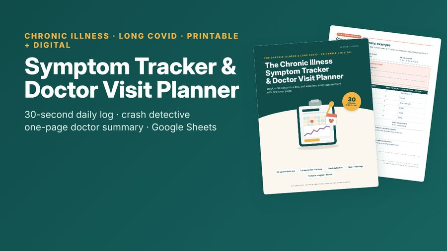

Doctor Appointment Checklist for Chronic Illness
What to prepare the week before, what to bring and what to write down straight after a doctor visit.
When you live with a chronic illness, an appointment can cost a full day of energy, so it is worth making each one count. Use this checklist the week before, on the day and afterwards. It is an organizing guide, not medical advice.
The week before
- Write your top three concerns, most important first.
- Note what has changed since the last visit: new symptoms, symptoms that got worse or better, and anything you stopped being able to do.
- Update your medication list: name, dose, what it is for, who prescribed it. Include supplements and anything you stopped taking, with the reason.
- Look back over your symptom log and work out your usual and worst scores, plus the number of good days and crash days.
- List questions you want answered. Three to five is realistic.
- Check whether you need test results or letters from another clinic, and ask for them now.
- Plan your energy: keep the day before and the day after as light as you can.
What to bring
- A one-page summary with two copies: one for the doctor, one for you.
- Your medication list.
- ID, insurance card and any referral letter.
- Recent test results the doctor may not have.
- A pen and paper, or your phone, for notes. Ask first if you would like to record the conversation.
- Water, a snack, medication you may need while waiting, and anything that helps you cope with the waiting room (ear plugs, sunglasses, a cushion).
- A person, if you can. A second set of ears helps on brain-fog days.
During the visit
- Say your three concerns in the first minute.
- Hand over the one-page summary.
- Describe each symptom by what it stops you doing.
- Before you leave, repeat the plan back: "So the plan is X, and I come back in Y weeks. Is that right?"
- Ask: "What should make me contact you sooner?"
Straight after
Do this in the car park or as soon as you are home, before the details fade:
- Write down what was decided, in your own words.
- List new prescriptions, tests and referrals, and who is responsible for booking each one.
- Note anything that was not addressed. It goes at the top of the list next time.
- Put follow-up dates in your calendar.
- Rest. The appointment was the day's activity.
A health passport for new doctors
If you see new clinicians often, keep a single page that never changes much: diagnoses with dates, current medications, allergies, past surgeries, your key contacts and what a normal bad day looks like for you. It saves you from retelling your history from memory every time.
This checklist helps you organize your own notes. It is not medical advice. Always follow your own care team's advice.
Want it done for you?
Chronic Illness Symptom Tracker & Doctor Visit Planner. Log symptoms in 30 seconds and hand your doctor a one-page summary.
